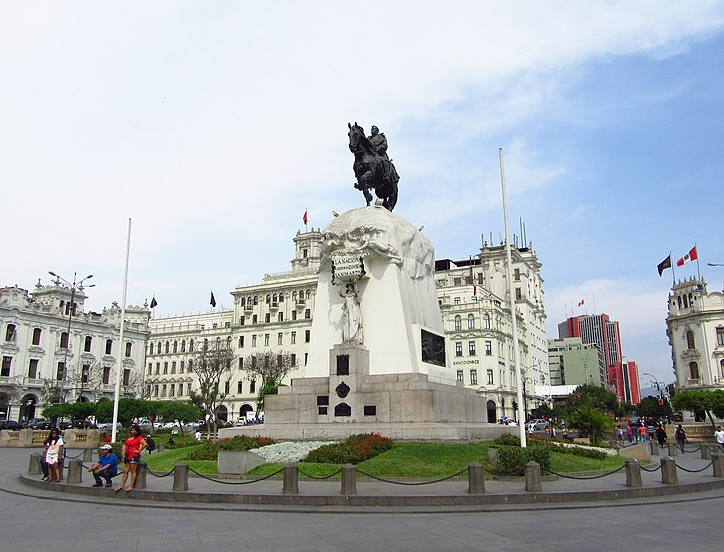
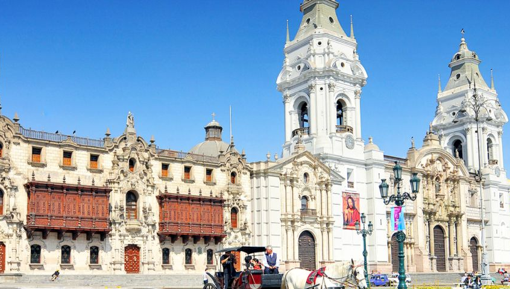
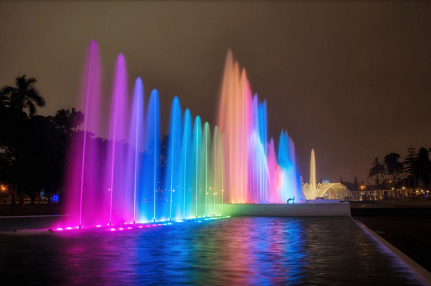
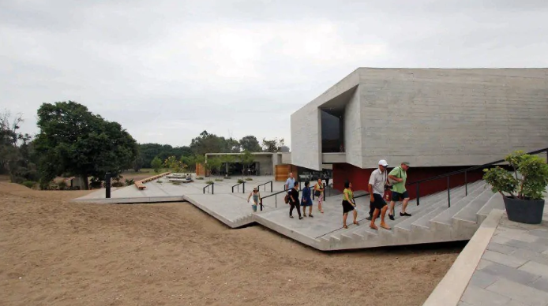
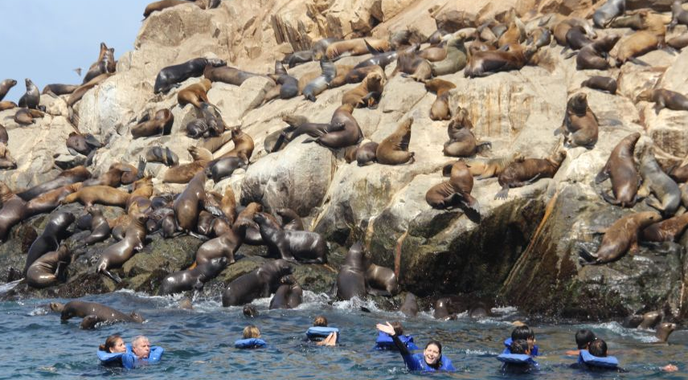

Inca Route: Start
Our TourPeruTravellers Itinerary :
1.- CITY TOUR LIMA + BARRANCO (4 hours)
2.- COLONIAL LIMA CITY TOUR (3 hours)
3.- MAGIC WATER FOUNTAINS
4.- PACHACAMAC
4.- PALOMINO ISLANDS
In TourPeruTravellers, we offer you this magnificent inka route where you will enjoy the museums, archeaological sites, seaside.
Our TourPeruTravellers Itinerary :
1.- CITY TOUR LIMA + BARRANCO (4 hours)
2.- COLONIAL LIMA CITY TOUR (3 hours)
3.- MAGIC WATER FOUNTAINS
4.- PACHACAMAC
4.- PALOMINO ISLANDS
 Lima the city of The kings; We will visit the Plaza San Martín, its balconies and old mansions, the Plaza Mayor and its most important buildings such as the Government Palace, the Lima Cathedral, the Archbishop's and Municipal Palace, the Desamparados Station, among others. We will enter one of the most important convents of the 17th century. and the underground crypts known as Catacombs. City tours Modern Lima, The park of love, the Huaca Pucllana (panoramic).
Includes: Catacombs Tickets(Museum Guide). DRIVER GUIDE: SPANISH / English – PRIVATE SERVICE
 Lima the city of The kings; We will visit the Plaza San Martín, its balconies and old mansions, the Plaza Mayor and its most important buildings such as the Government Palace, the Lima Cathedral, the Archbishop's and Municipal Palace, the Desamparados Station, among others. We will enter one of the most important convents of the 17th century. and the underground crypts known as Catacombs. City tours Modern Lima, The park of love, the Huaca Pucllana (panoramic). Includes: Catacombs Tickets (Museum Guide).
 Transfer from the Hotel to the Magic Water Circuit, which is a great show of ornamental fountains whose powerful jets are combined with the rhythm of classical music, and the spectacular lasers blend in with the water fluids, drawing multicolored shapes that make us fantasize for a few minutes about a cybernetic future. Open only from Tuesday to Sunday.
Includes: Tickets and guide.
 Pachacamac - one of the most important religious centers of ancient Peru, an oracle dedicated to the great god Pachacamac, the most important deity of the entire coast in the 15th century. Explore with us its imposing pyramids and temples built with adobe, which have endured the passage of centuries and still preserve that majesty they had in their heyday. Once the Tour is over, the bus will take you to your Hotel. ONLY FROM TUESDAY TO SUNDAY
Includes: Tickets, Bus and Spanish or English Guide, Private service

On board our Cruise ship, which is equipped for long journeys, we will begin our tour of the set of Islands, on the trip we will observe:
THE CAMOTAL; Part of Callao that is submerged under water as a result of an earthquake in 1746. On low tide days you can see some remains of this place.
SAN LORENZO ISLAND; in front of the bay of Callao. It Located at a distance of 4 km. has an area of 8 km long by 2.5 km wide. Religious center in the pre-Hispanic era, in the colony it was a cemetery for sailors, corsairs and pirates. Later it was a place of studies for important researchers such as the Englishman Charles Darwin, today converted into a military zone, we can have a panoramic view of the island in our tour.
THE FRONTON ISLAND; About 7 km from the coast, it emerges like an sea, there you can appreciate the remains of the prison of the same name, in addition to listening to some of its innumerable stories and anecdotes. immense rock from the
CAVINZAS ISLANDS; Group of islands and rocky islets with caves and natural caverns, it is the last guano center in the area, of which some remains remain. Now it is a paradise for seabirds such as pelicans, boobies, guanay, chuitas, seagulls of various varieties, etc. Also inhabited by Humboldt penguins, which can be seen occasionally.
PALOMINO ISLANDS; An important set , turned by nature into a habitat and refuge for sea lions where these huge , playful and friendly animals live in these rocky islands , surrounded by beautiful caves and natural caverns , also if you are prepared you can take a bath and take a picture with the sea lions in the background.
Our programme include:
➢ Crossing, Life jacket.
➢ Port embarkation and disembarkation fee.
➢ Hot and cold non-alcoholic drinks and light snacks (chifles, chips, pretzels, etc.).
➢ Transfers Hotel - Dock - Hotel
➢ Travel Insurance